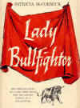

What's
the Matador(a)? What's
the Matador(a)?
Texas Highways September 2007
(Click
here for full article)

Lady Bullfighter
by Patricia McCormick, 1954
(click
here for
TIME Magazine review)
A
Brave Matadora Explains the Bullfight
Sports Illustrated, March 1963 Vol 16 n.10
(click
here to
open full article)
Patricia McCormick: A Texas First As A Bullfighter
by Jean Flynn, 2002
(click
here for
book detail)
Exhibit
celebrating Patricia McCormick at the
Heritage Museum of Big Spring, Texas (2007)
(click
here for
exhibit website)
|